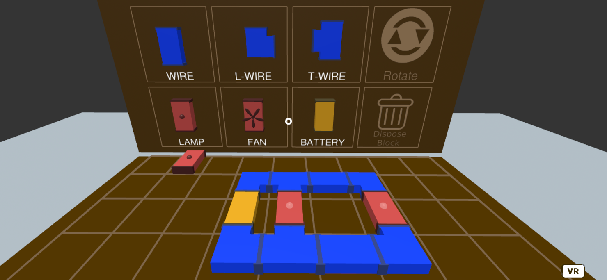
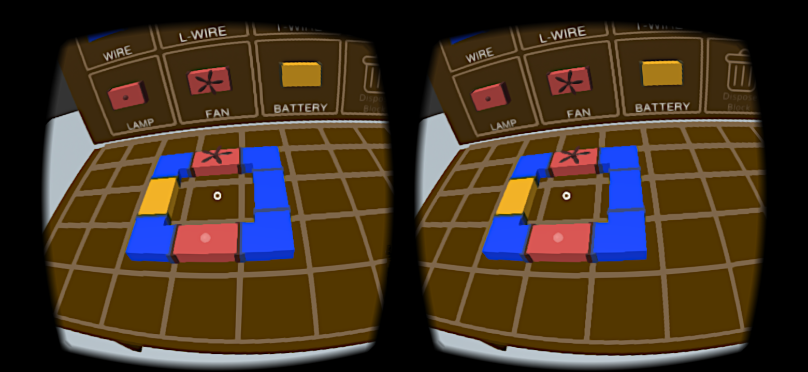

Eletric Circuits
Electric circuits are usually taught in high school physics courses. Since the behavior of electricity can be unclear to students at first, it is usually beneficial to have a circuit to demonstrate what happens in series, parallel, and mixed circuits. However, working with electricity directly may not be safe, and educational hardware designed to be safe may be prohibitively expensive or unavailable. This project aims to provide a free and safe way for everyone to create and learn about electric circuits.
More modes
Virtual Reality

In order to fully experiece the VR mode, it is required one HMD (head-mounted display).

It may be necessary to accept the installation of Google Virtual Reality services
on the first access.
Images in Virtual Reality


❮
❯
×